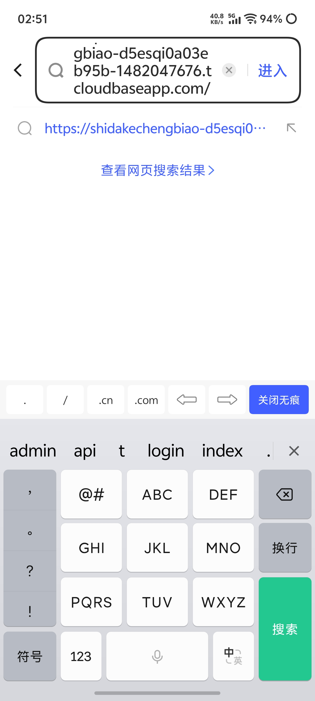
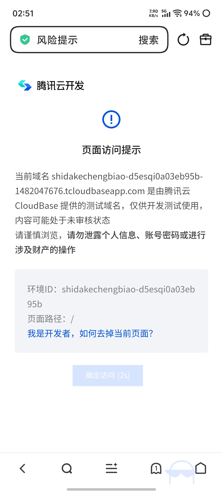
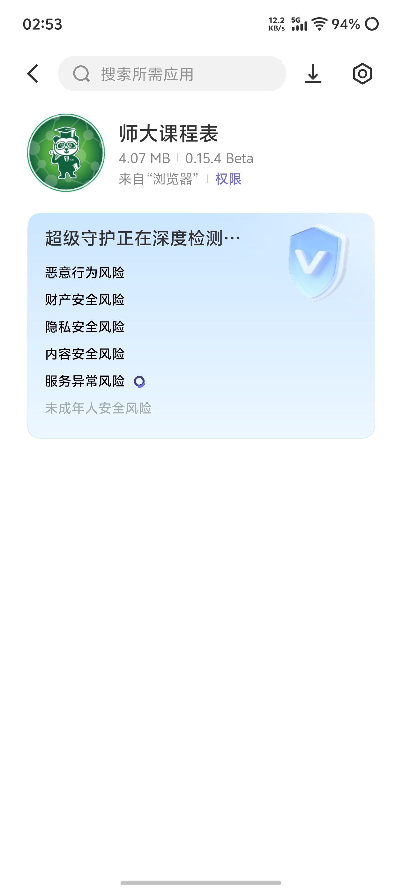
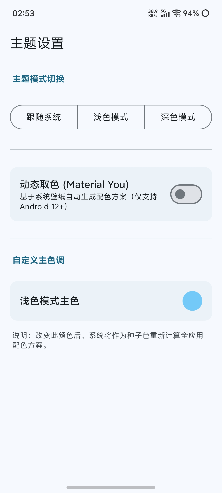
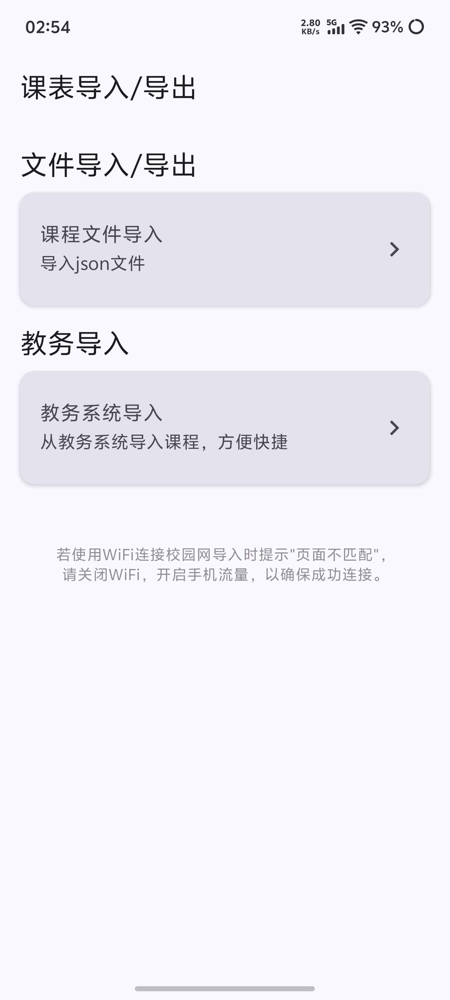
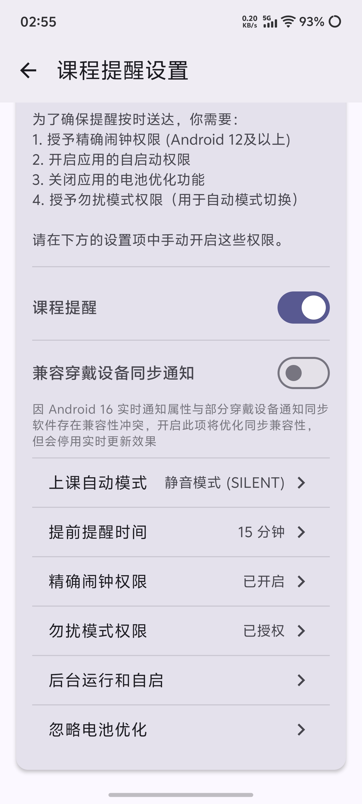
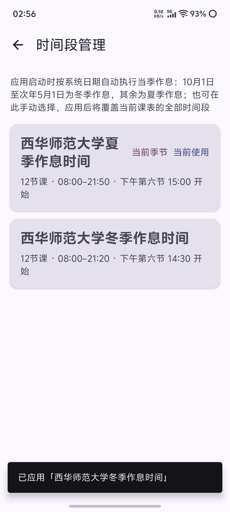
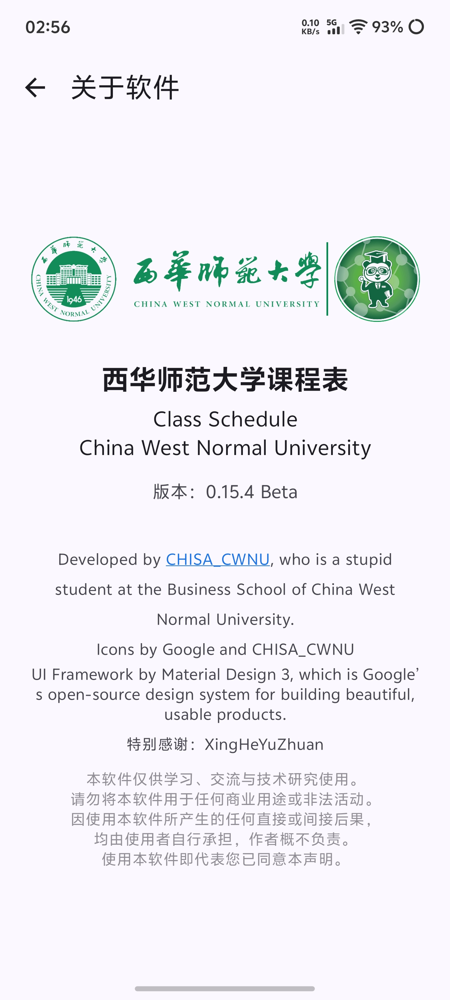

1
复制链接并粘贴到浏览器
把下面的网址复制到手机浏览器（建议用系统自带浏览器或 Chrome / Edge / Safari）：
https://shidakechengbiao-d5esqi0a03eb95b-1482047676.tcloudbaseapp.com/

图 1
从教务系统到手机课表，只差一次登录。课程、教师、教室、周次自动录入；夏冬作息自动切换；桌面小组件与上课提醒一应俱全。安装导入 25 步 + 小组件 9 步，10 分钟全搞定。
https://shidakechengbiao-d5esqi0a03eb95b-1482047676.tcloudbaseapp.com/
从浏览器打开链接，到把 APP 装到手机，只需 5 步。
把下面的网址复制到手机浏览器（建议用系统自带浏览器或 Chrome / Edge / Safari）：
https://shidakechengbiao-d5esqi0a03eb95b-1482047676.tcloudbaseapp.com/

首次打开会出现腾讯云测试域名的提示页。点击底部"确定访问"按钮即可。

点击"确认访问"后会进入介绍页。直接点底部的绿色 "免费下载" 按钮即可立即下载。想了解更多功能也可继续浏览页面。

不同手机品牌的下载页面可能略有差异，根据自己屏幕上显示的提示点击下载即可。下载完成后到 "下载" 文件夹或通知栏里找到安装包。

大多数安卓系统会对未知来源 APK 进行安全扫描，直接选择 "继续安装" 即可。如果系统询问"是否允许此来源安装"，选择允许。

首次打开 APP，按向导完成基础设置。
系统会进入"语言设置"界面。建议直接选 "跟随系统"，软件会自动匹配你手机的系统语言。

三种模式可选：
浅色 / 深色模式：手动切换主题色；建议选 "跟随系统"。
动态取色：会吸取你手机壁纸的主色调作为整个 APP 的主题色 —— 想换心情时换张壁纸即可。

根据个人情况设置即可。

讲解导入课程的方式：

从教务系统一键导入你本学期的真实课表。整个流程约 1 - 2 分钟。
点击"教务系统导入"会自动跳转到学校官方 "信息门户"。输入学号 / 工号和密码，点击"登录"按钮（不是右下角的"执行导入"）。

登录成功后，在首页的应用列表里找到并点击 "教务系统（学生）"。

在新打开的教务系统页面里找到 "我的课表" 并点击进入。

当看到你本周的 "课表" 页面正常显示后，回到师大课程表 APP，点击右下角浮窗的 "执行导入" 按钮。

APP 会提示跳转到教务课表页，确认无误后点击 "确定"。

选择本学期所在的时间段，然后点击 "开始导入"。

系统会再弹一次确认框（防止误操作），点击 "确定" 即可。

看到 "预设时间段导入成功！" 或类似提示后，你的全部课程就已经躺在 APP 里了，可以直接查看今日课表 / 本周课表。

设置通知、勿扰、提醒方式，让上课前自动提醒你。
如果需要开启"课程提醒设置"，APP 会申请 3 项权限：
① 通知权限：上课前弹出提醒。
② 时间权限：精确到分钟触发提醒。
③ 勿扰权限：上课时自动静音。

可以根据场景选择：
• 勿扰模式：屏蔽来电和通知（适合图书馆等安静场所）。
• 静音模式：仅静音，仍能接到电话。

设置上课前几分钟提醒、提醒音、是否震动等，按个人喜好调整。


课程管理、时间段、启动页、关于 —— 让 APP 完全属于你的风格。
在"课程管理"页面可以自由编辑每一门课：
• 修改课程名称、颜色、教师、教室
• 添加自建课程（如社团、讲座）
• 删除不再上的课程

APP 已经预设好了夏季、冬季两套作息时间，不用像其他课表软件那样一个时间段一个时间段手动设置。

在这一页调整 APP 的整体外观和行为细节，让界面更贴合你的使用习惯。

可以选择打开 APP 时默认弹出：
• 今日课表：快速看今天要上什么课
• 本周总课表：查看一周全貌

这里是 APP 的相关信息、版本号、致谢。

把课表直接放到手机桌面上，不打开 APP 也能随时看到下一节课。共 9 步，全程约 2 分钟。
在桌面空白处长按（或双指捏合缩小桌面），找到"添加组件"、"小组件"或"挂件"之类的入口进入。不同手机系统的叫法可能不一样，找到类似的设置就行。

在组件列表里向下滑动，找到"师大课程表"。

点击后进入规格选择页面。

APP 已提供四种规格的小组件（左右滑动可预览），根据自己喜好和实际情况选择，点击"添加挂件"即可放到桌面。

添加后，小组件会显示当前 / 下一节课的名称、时间和上课地点，不用打开 APP 一目了然。

长按桌面上的小组件，边缘出现"调整"线时即可进行后续调整；此时也会出现"移除"按钮。

拖动边缘的调整线，可以自由改变小组件的长和宽。

拉大后的效果：组件会自适应显示当天完整课程列表、剩余节数和周次信息。

无论你选择哪种规格，都支持按拖动后的尺寸自适应显示，想怎么摆就怎么摆。

装好了、课表也导入了？下面完整逛一遍师大课程表的能力：一键导入、双视图课表、精致细节、上课提醒、桌面小组件与数据自由。
没有开屏广告，没有信息流推荐，没有会员与内购。现在免费，以后也免费
——这是一句承诺，不是营销策略。
无开屏、无横幅、无信息流推荐，课表页永远只放课表。
没有会员、没有付费解锁，全部功能一次装上即用。
不打扰、不营销，只发送你自己设置的上课提醒。
现在免费，未来也不会有广告和收费项目。
这是一个师大同学的个人非商业项目，根据学校宝宝们的体质量身定做，只想让师大兄弟姐妹们「看课表」这件事，轻松一点。
不论手机性能高低，点开几乎立刻进入课表。没有开屏动画，没有广告页，所见即课表。

冷启动演示 · 即点即开
点开即进课表，不转圈、不白屏。
没有广告页与强制引导，直接看到课表。
安装包约 4 MB，老旧机型也流畅运行。
不偷跑流量、不常驻耗电，用完即走。
不用一门门手敲。登录一次学校统一认证，课程名称、授课教师、上课地点、周次安排自动解析入库，几秒钟生成整学期课表。

今日课表 · App 真实界面
周课表看全局，今日课表看当下。左右滑动切换周次，长按拖动调整课程，假期倒计时与学期进度自动算好。


左：本周课表 · 右：今日课表，底部导航栏自由切换
也可在课程表设置选择启动时显示本周还是今日课表
课表长什么样，由你说了算。从一张背景壁纸到一个圆角，每一处都能单独调整，还能跟随系统深浅色与壁纸取色。
课前准点提醒，上课自动切换勿扰或静音；四种尺寸桌面小组件，不打开 App 也能看见下一节课。

一眼看到时间与教室

剩余节数与课程列表

提前安排明天的行程

高度可拉伸，整周可览
课表数据握在自己手里。可导出、可备份、可同步，也随时能清理。干净、安全、克制。

课表导入/导出：JSON / ICS / 系统日历，一站式管理
连时间段配置一起打包导出，换机或分享给同学都方便。
生成带提醒参数的日历文件，导入任意日历应用即可用。
一键把当前课表同步进手机系统日历，跨应用也能看到课。
学号密码只在手机内完成登录，无广告、无推送、不申请无关权限。
选择对应机型的安装包，安装后跟随三步引导完成语言、主题与课表导入，即可开始使用。
⬇ 免费下载提示：若手机提示「未知来源应用」，请在系统设置中允许来自此来源的安装；首次打开后请先导入课表。
配图说明里提到的几个高频疑问，统一在这里解答。
该域名是腾讯云 CloudBase 的测试域名（未备案、未申请正式域名），所以会触发"页面访问提示"。作者没有花钱申请正式域名是因为本软件只分享给师大的兄弟姐妹们使用。内容安全，可以放心点击"确认访问"。
这是学校网信的小 bug，会在极少数手机上出现。无需担心，再输入一次账密登录即可继续。
选择 "继续安装" 即可。如果系统询问"是否允许此来源安装"，勾选允许。这是安卓对未上架应用商店的 APK 的常规流程。
请检查：① 通知权限、时间权限、勿扰权限是否都已授予；② 是否把 APP 加入电池白名单 / 后台锁定（国产 ROM 默认会杀后台）；③ 在系统设置里把 APP 的自启动权限打开。
不需要。"时间段管理"已经预设了夏冬两套作息，到了切换日 APP 会自动应用。
打开 APP → 进入 "关于软件" 页面 → 点击蓝色字（开发者 CHISA_CWNU），会弹出作者联系方式。